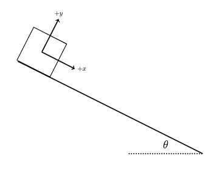
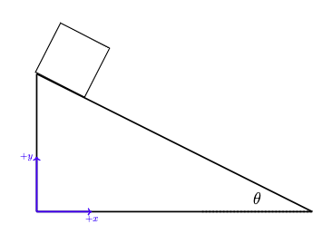

D3.1 Newton’s Laws - Linear Motion#
D3.1.1 Motivation#
The concept of force is a fundamental component of physics and the core of Newtonian mechanics. Newton described the interactions between objects as forces and that an object would change its motion according to the net interaction (or force) acting upon it. Later, it was realized that forces arise from field interactions (quantum fields: electric, weak, strong, and gravity: note that we do not have a verified quantum gravity theory).
Newton’s Laws should be very familiar to you from University Physics I and II, however, it is also my experience that the majority of students have formed “bad habits” of solving these problems without paying to much attention to the solving process. While this work for simple problems, the lack of proper analysis becomes evident when presented with more complex problems. The main objective in this module is to make you aware of the bad habits and hopefully encourage you to change them.
D3.1.2 Newton’s Laws#
First Law: N1 :: Law of Inertia#
The first law is a conceptual law that states: An object in motion will remain in the same state of motion unless a net external interaction is acting on the object.
In this context momentum is a measure of motion and inertia is a measure of the resistance an object has to a change in motion. For linear motion inertia is mass.
Second Law: N2#
This law is a way to quantify the first law. We saw it in previous section as the momentum-impulse theorem, and in differential form it is
For a point particle it can be written in its most common form:
Third Law: N3 :: Law of Action and Re-action#
This law states that forces are consequences of objects interacting with each other and always occur in pairs with one force acting on one object and the other force acting on the other object. For example, the earth pulls on the moon and the moon pulls on the earth.
D3.1.3 Solving Strategy for N2#
The key is increased awareness of a solving strategy. Kleppner and Kolenkow have an excellent approach, and here is a modified version of it: YouTube Video of the Solving Strategy
Make a sketch of the problem: this demonstrate that you understand the problem. If not, the sketch may help you understand it.
Free-Body-Diagram: this is the physics! Analyze all the interactions that takes place (contact and field interactions) for each object in the system. It may be helpful to identify the classical fields that are present (gravity and/or electric), and identify contact points.
Set up a reference frame: this is the system that translates the FBD into algebraic (or differential) equations. Newtonian mechanics is usually solved in cartesian coordinates where its simplicity is to our advantage.
Decompose the force vectors into their component forms.
Establish Newton’s 2nd Law in component form, for example \(\sum f_x = ma_x\) (keep in mind that the acceleration is only zero if the system is static or moving with constant velocity).
Write down known auxiliary equations such as \(f_g = mg\) and \(f_s = kx\). Solve the problem if possible. If not proceeed to next step.
Establish constraint equations: these are equations that dictate geometric relationships. Examples are length of rope in pulley systems (length = constant), marble rolling on a spherical surface (radius = constant). Solve if possible.
The YouTube channel has a few examples of applying these steps. Note that the steps may be slightly different order or combined in the videos.
Consider a box sliding down a frictionless, inclined surface as shown in the figure. Find the acceleration of the block with respect to the given reference frame.

Show code cell source
import sympy as sym
import numpy as np
#forces acting: gravity, normal
g = 9.81
# unknown variables
m = sym.Symbol('m')
theta = sym.Symbol('theta')
ax = sym.Symbol('ax')
ay = sym.Symbol('ay')
fn = sym.Symbol('fn')
fg = sym.Symbol('fg')
#helpful equation
fg = m*g
# component form
fgx = fg*sym.sin(theta)
fgy = -fg*sym.cos(theta)
fnx = 0.0
fny = fn
#N2: 0 = ma - fnet
# x
eqx = m*ax - (fnx + fgx)
# y
eqy = m*ay - (fny + fgy)
# constraint equation: y = 0 --> ay = 0
ay = 0.0
sol = sym.solve((eqx,eqy),(ax))
a = [sol[ax],ay]
print('The acceleration of the block is: '+str(a)+' m/s^2')
Show code cell output
The acceleration of the block is: [9.81*sin(theta), 0.0] m/s^2
Consider a box sliding down a frictionless, inclined surface as shown in the figure. Find the acceleration of the block with respect to the given reference frame.

Use your result from Problem 1, apply a proper coordinate transform between the two coordinate systems to obtain the same acceleration as you did in Problem 2.